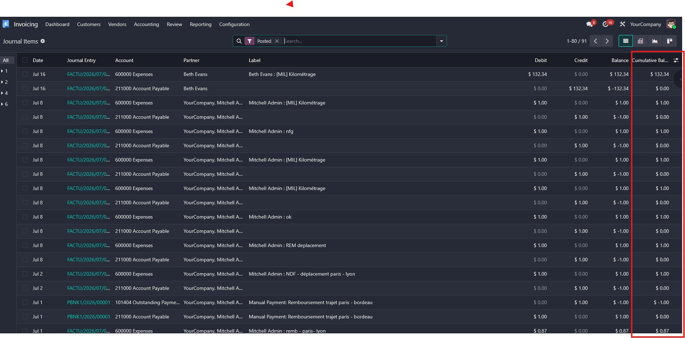
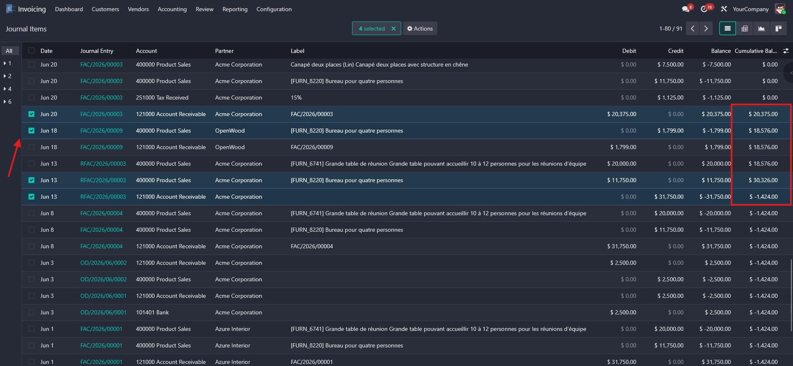

Live running balance to speed up manual reconciliation
Adds a "Cumulative Balance" column to the Journal Items list, so accountants can select entries and watch, live, whether they sum to zero — no more reconciling with a calculator on the side.
web_list_cumulative_balanceManual reconciliation (e.g. on cash or clearing accounts) usually means picking entries one by one and adding them up outside of Odoo to check whether they balance to zero — slow, and easy to get wrong on long lists.
This module removes that manual step: pick any lines directly in the Journal Items list, in any order, and the cumulative balance is computed and displayed live, right in the list, next to the standard Balance column.


This module is maintained by Nuxly. Visit nuxly.com